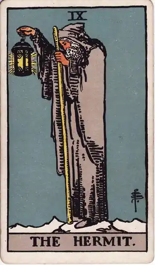
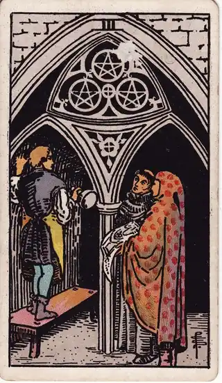
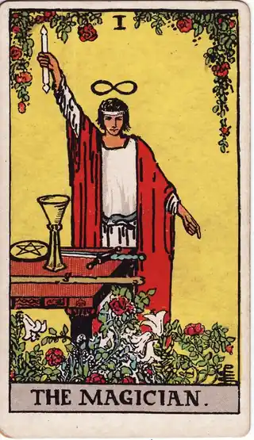

READING
Why a one-line note of your reason for deciding reduces what you're torn over
· DECIDE. editors

"If only I had chosen the other path back then." When the result doesn't go as you hoped, you begin to blame your past self's choice. Even though you should have chosen seriously, taking your time, you interrogate yourself: why did I make that decision? Does that loop of regret sound familiar?
To say it up front: the cause of regret is not that the decision itself was wrong. The cause is that you've cleanly forgotten the reason at the time — "why I chose that path." The goal of this article is to learn a habit of just one line, which delivers that reason to your future self.
POINT 01 What's really behind regret: forgetting your reasons
Your self at the moment of deciding is thinking as hard as you can, within limited information. But as months and years pass, the situation at the time, the decision you were torn over that you were carrying, and what you valued all fade from memory. What remains is only the "result."
Then, the human head begins an unfair judgment. The "outcome bias" of treating the judgment at the time as bad just because the result was bad. And the "hindsight bias" of looking back and falling into the illusion that "I should have been able to foresee it from the start." When these two overlap, your self at the time ends up bearing responsibility even for a future you could not have known.
The way to prevent it is simple. At the moment you decide, write down just one line of your reason at that time. "I choose ◯◯. Because ~." A record of just this preserves your thinking at the time accurately. Even if the result is bad, you can avoid blaming your past self, because "under those assumptions, this choice was the best." How to face regret itself is also sorted out in How to choose without regret.
This one line is not only to protect your past self. It's also concrete advice to your self the next time you're torn. "Last time I chose for this reason, and the result was this." Whether that round trip remains or not greatly changes the speed and sureness of your next decision.
POINT 02 Seeing it through the cards

The Hermit is the figure of a sage standing alone, lantern in hand. It represents lighting your feet with an inner light, not an outer voice. The act of writing down your reason for deciding is exactly this lantern. When your future self is torn in darkness, one line — "my self back then thought like this and chose" — quietly lights your feet. A record is also a letter to your future self.

Three of Pentacles, in the figure of craftspeople building a structure together, represents "accumulation" and "mastering a craft." A one-line note is the same. One record is modest, but once 10, then 30 accumulate, it becomes a "blueprint of your own judgment." Just as a craftsperson raises their skill from records of work, decisions too gain precision through an accumulation of records.

The Magician is the figure of one laying tools out on a table and handling them at will. It represents the power to use the materials at hand freely and produce the form you want. A log of past decisions is exactly these "tools at hand." When you run into a similar decision you're torn over, if your past self's material for judgment is in place, you don't need to be torn all over again from zero. A record is a toolbox for future decisions.
POINT 03 A one-line reason pays off over time
The real power of a one-line note appears not at the moment you write it, but when it has accumulated.
First, once a few records line up, your own "habits of judgment" come into view. "When I'm tired, I always choose to maintain the status quo." "With decisions I'm torn over about relationships, I put the other person's feelings first and regret it." Habits can't be seen while they're inside your head. Only when they're lined up as text can you look at them objectively.
Next, once you can see your habits, your next decision changes. Just being able to notice "I'm about to decide in a tired state again" lets you choose countermeasures like setting it down overnight, or consulting someone. And at review time, because you can verify results and reasons side by side, you can learn from material, not emotion: "that judgment was right," "that assumption had collapsed." A decision is not a talent or a personality trait; it's a skill that grows through records and verification.
That's exactly why it's important not to end with drawing a card. Face what you really feel through a card's perspective, decide, and leave one line of your reason. When this flow becomes a habit, your decision log becomes a record itself of "what kind of person I am, and what I have valued in living." Having your own dedicated material you can refer to each time you're torn reliably shortens the time of the next decision you're torn over.
The trick to writing is to keep it short anyway. You don't need fine sentences. "My body is at its limit from continued overtime, so I choose to rest." "I put the feeling of being able to use it for a long time ahead of the price." Rather than lining up forecasts of the result or excuses, you leave only "what I weighed most heavily in deciding." It's fine to add one word of feeling. "I'm anxious, but I choose the side of taking on the challenge." That one word, when you read it back later, lets you recall even the temperature of your self at the time, accurately. Precisely because it's one line, it continues without becoming a bother, and because it continues, it pays off over time.
POINT 04 Questions to ask yourself
Finally, try asking yourself this. About a decision you regretted recently, can you accurately recall what your self at that time was thinking? If you were to write your reason for deciding in one line, what would you write for today's decision? Once 30 records have accumulated, what habits of yours look likely to come into view? And knowing those habits, how would you like to decide next time?
You don't need a grand diary. Just one line of the reason you decided. From today's small decision, try leaving that one line. Your self a few months from now should be saved by that record, many times over.
Cards related to this article


More reading
- The types of free tarot readings and how they differ — where the "that feels spot-on" feeling comes from, and how to use them for a decision
- When you're torn over whether to keep going or quit. Standards for letting go of attachment
- Why I, who don't believe in fortune-telling, made tarot into a decision-making tool
- Why the more you ask for advice, the less you can decide, and how to get your own voice back
- When you're torn over whether to keep your current job. How to read a plateau in your career